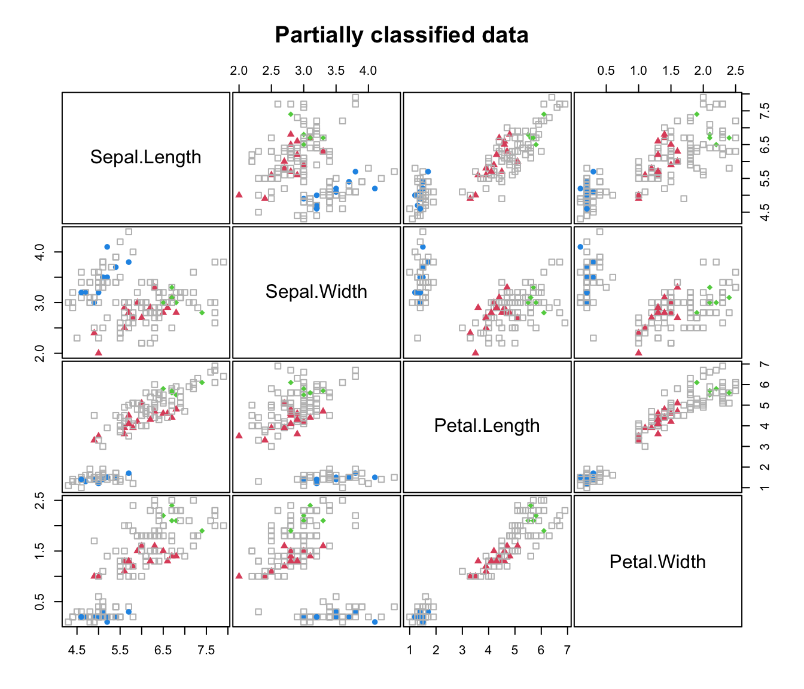
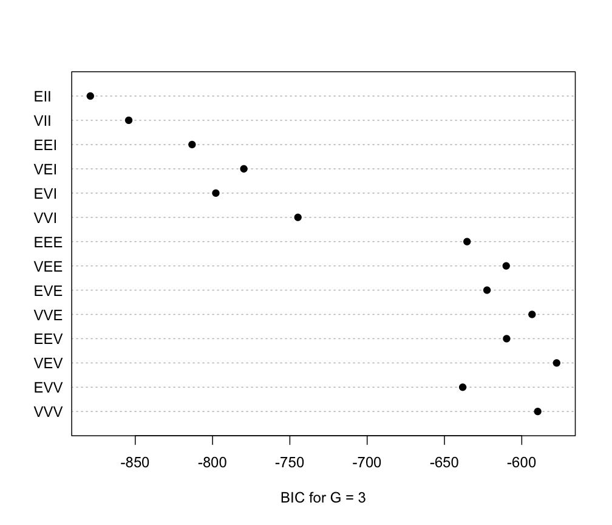
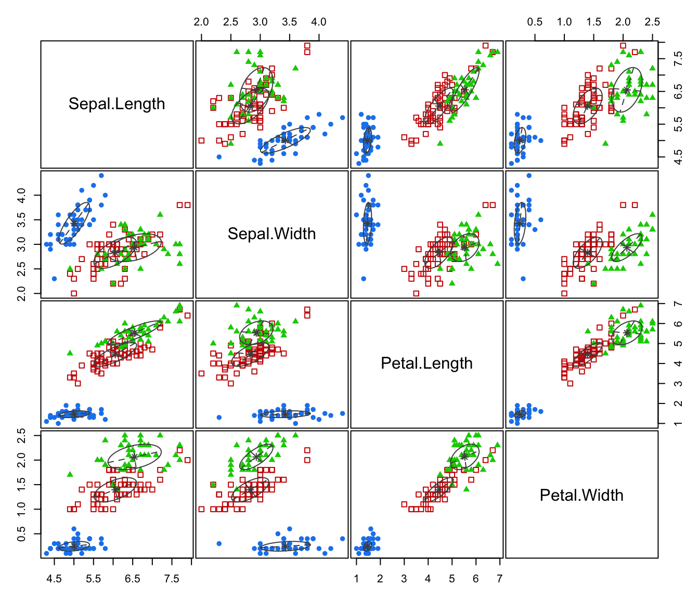
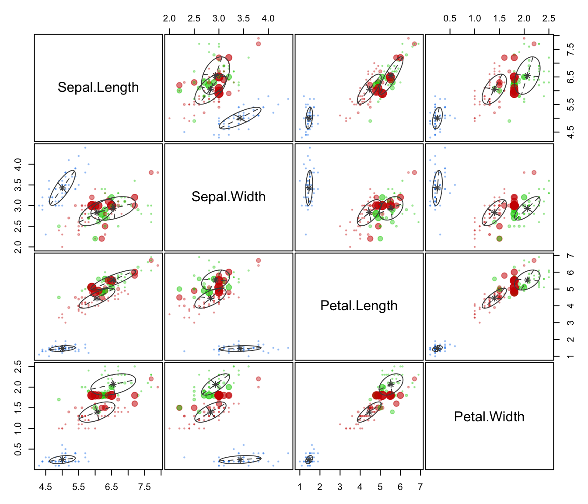

Plotting method for MclustSSC semi-supervised classification
plot.MclustSSC.RdPlots for semi-supervised classification based on Gaussian finite mixture models.
Arguments
- x
An object of class
'MclustSSC'resulting from a call toMclustSSC.- what
A string specifying the type of graph requested. Available choices are:
"BIC"=plot of BIC values used for model selection, i.e. for choosing the model class covariances.
"classification"=a plot of data with points marked based on the known and the predicted classification.
"uncertainty"=a plot of classification uncertainty.
If not specified, in interactive sessions a menu of choices is proposed.
- ...
further arguments passed to or from other methods. See
plot.Mclust.
Examples
X <- iris[,1:4]
class <- iris$Species
# randomly remove class labels
set.seed(123)
class[sample(1:length(class), size = 120)] <- NA
table(class, useNA = "ifany")
#> class
#> setosa versicolor virginica <NA>
#> 10 15 5 120
clPairs(X, ifelse(is.na(class), 0, class),
symbols = c(0, 16, 17, 18), colors = c("grey", 4, 2, 3),
main = "Partially classified data")

# Fit semi-supervised classification model
mod_SSC <- MclustSSC(X, class)
summary(mod_SSC, parameters = TRUE)
#> ----------------------------------------------------------------
#> Gaussian finite mixture model for semi-supervised classification
#> ----------------------------------------------------------------
#>
#> log-likelihood n df BIC
#> -193.521 150 38 -577.4461
#>
#> Classes n % Model G
#> setosa 10 6.67 VEV 1
#> versicolor 15 10.00 VEV 1
#> virginica 5 3.33 VEV 1
#> <NA> 120 80.00
#>
#> Mixing probabilities:
#> setosa versicolor virginica
#> 0.3333333 0.3876695 0.2789972
#>
#> Means:
#> setosa versicolor virginica
#> Sepal.Length 5.006 6.055272 6.549251
#> Sepal.Width 3.428 2.828321 2.932692
#> Petal.Length 1.462 4.453865 5.534246
#> Petal.Width 0.246 1.396544 2.064307
#>
#> Variances:
#> setosa
#> Sepal.Length Sepal.Width Petal.Length Petal.Width
#> Sepal.Length 0.15368111 0.13158310 0.021865057 0.013501154
#> Sepal.Width 0.13158310 0.17948985 0.015459683 0.012186709
#> Petal.Length 0.02186506 0.01545968 0.029128899 0.006498098
#> Petal.Width 0.01350115 0.01218671 0.006498098 0.009759900
#> versicolor
#> Sepal.Length Sepal.Width Petal.Length Petal.Width
#> Sepal.Length 0.29753053 0.10407744 0.2505462 0.07457733
#> Sepal.Width 0.10407744 0.10023478 0.1202666 0.05072488
#> Petal.Length 0.25054623 0.12026661 0.3560530 0.11652817
#> Petal.Width 0.07457733 0.05072488 0.1165282 0.06076865
#> virginica
#> Sepal.Length Sepal.Width Petal.Length Petal.Width
#> Sepal.Length 0.46326081 0.07787790 0.34315068 0.06944725
#> Sepal.Width 0.07787790 0.08041718 0.05955965 0.05271723
#> Petal.Length 0.34315068 0.05955965 0.35468725 0.06589333
#> Petal.Width 0.06944725 0.05271723 0.06589333 0.06694996
#>
#> Classification summary:
#> Predicted
#> Class setosa versicolor virginica
#> setosa 10 0 0
#> versicolor 0 15 0
#> virginica 0 0 5
#> <NA> 40 45 35
pred_SSC <- predict(mod_SSC)
table(Predicted = pred_SSC$classification, Actual = class, useNA = "ifany")
#> Actual
#> Predicted setosa versicolor virginica <NA>
#> setosa 10 0 0 40
#> versicolor 0 15 0 45
#> virginica 0 0 5 35
plot(mod_SSC, what = "BIC")

plot(mod_SSC, what = "classification")

plot(mod_SSC, what = "uncertainty")
